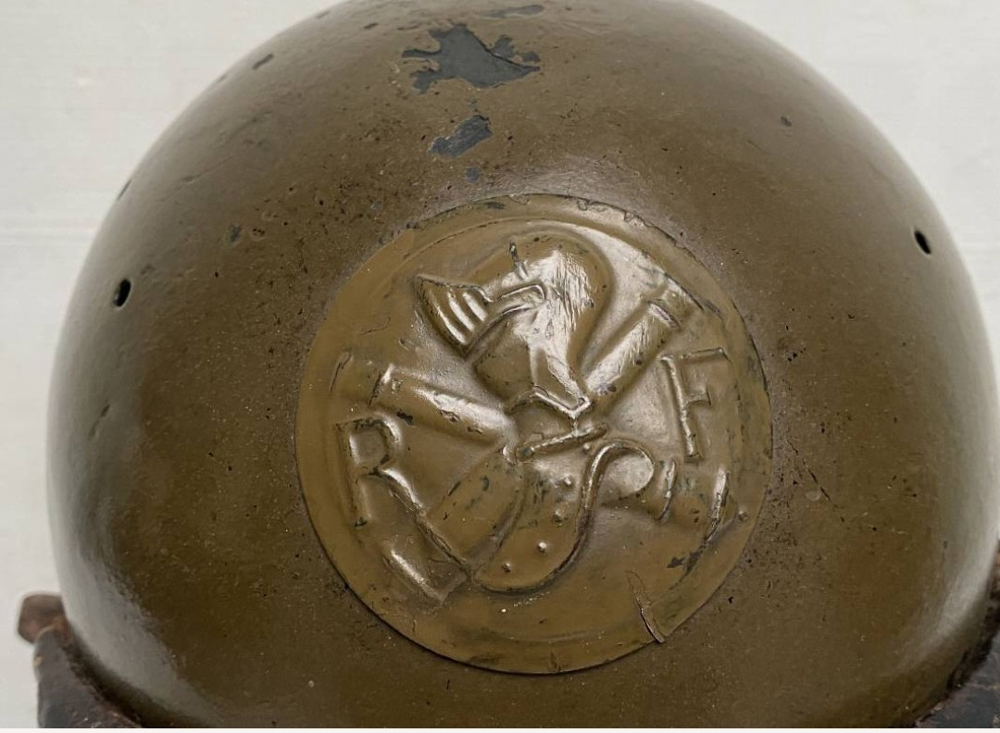
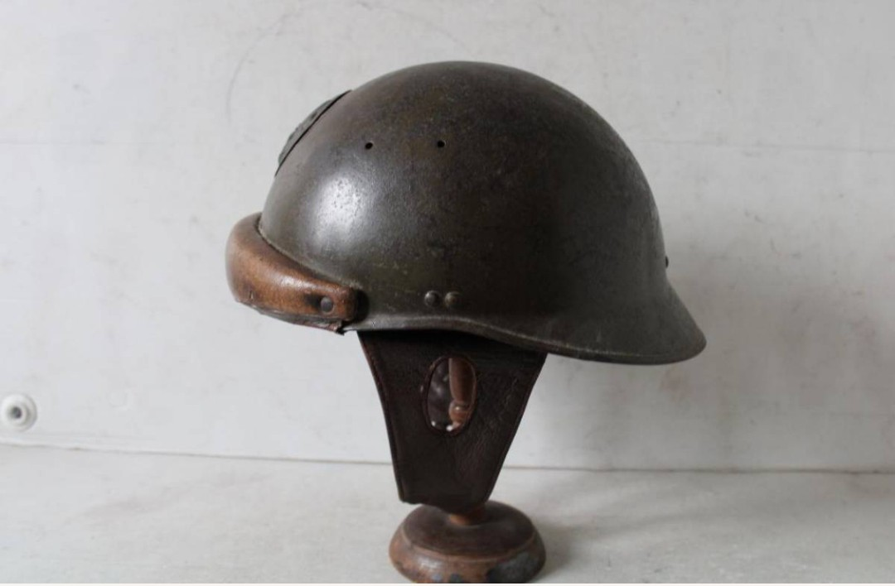

Pays : France
Modèle : Casque Tankiste Modèle 1935
Période : 1935–1940
Utilisation : Équipages de chars (B1, R35, S35, H39), Dragons portés, unités blindées
Le casque tankiste français modèle 1935 est conçu pour protéger les équipages de chars contre les chocs à l’intérieur des véhicules blindés. Fabriqué en cuir bouilli renforcé, il possède des coussins frontaux et latéraux caractéristiques, ainsi qu’une forme enveloppante.
Utilisé dès 1935, ce casque équipe les équipages des chars B1 bis, R35, S35 et H39. On le retrouve dans les unités blindées de la 1re et 2e DCR, ainsi que dans les Dragons portés. Il est omniprésent dans les photos des équipages français durant la campagne de 1940.
Points clés pour reconnaître un original :